Nine text-free generated masters with responsive AVIF/WebP exports. These are background plates, not functional page mockups. Browser composition and contrast review are still required.
arrival-desktop
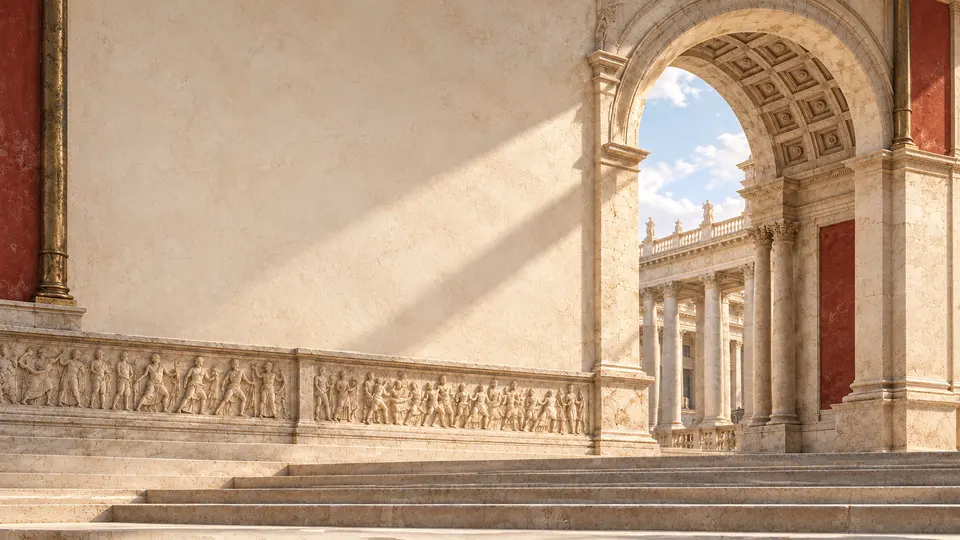
left plaster region above relief; 8–56% horizontal
1672 × 941 master · 63 KB preview
Original PNGarrival-mobile
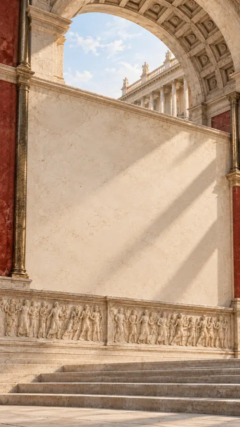
middle plaster region; keep headline below arch; constrain text to inner 75%
941 × 1672 master · 51 KB preview
Original PNGjourney-desktop
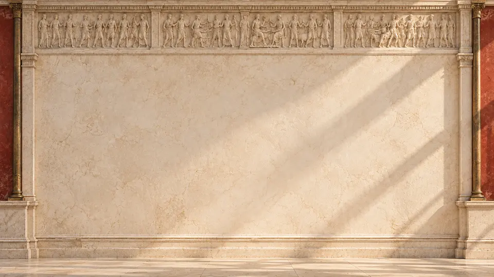
central plaster; put frieze in a separate header band if content grows
1672 × 941 master · 54 KB preview
Original PNGjourney-mobile
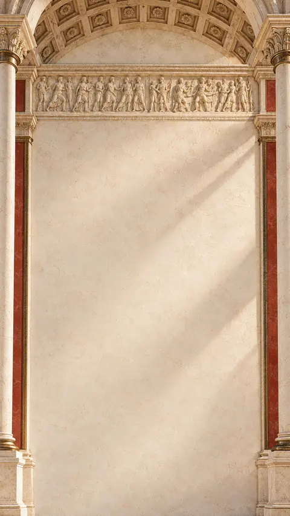
central plaster; put frieze in a separate header band if content grows
941 × 1672 master · 36 KB preview
Original PNGplayground-desktop
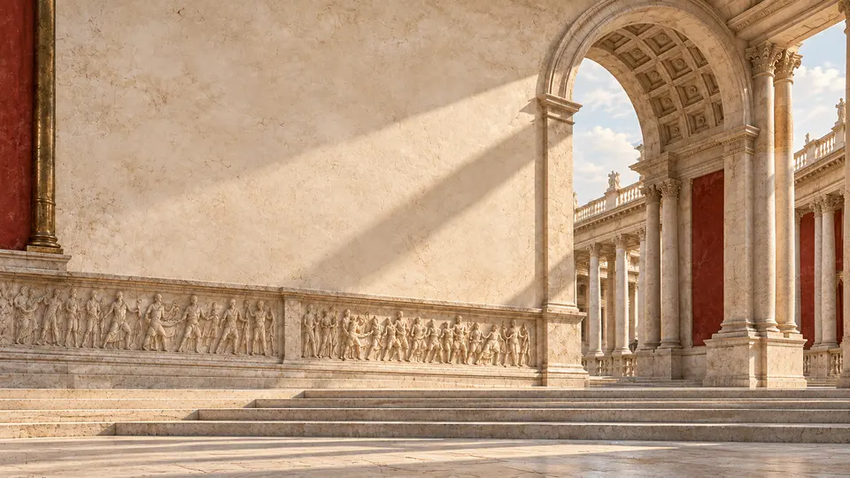
left/central plaster; WHOOP content remains normal HTML on an opaque reading surface
1672 × 940 master · 74 KB preview
Original PNGplayground-mobile
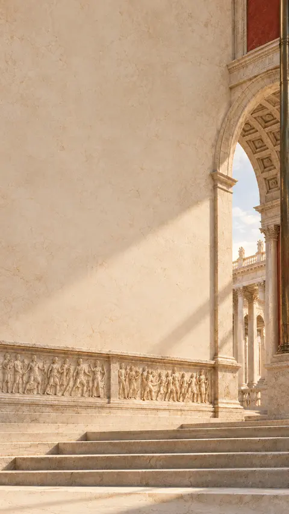
left/central plaster; WHOOP content remains normal HTML on an opaque reading surface
941 × 1672 master · 34 KB preview
Original PNGclosing-desktop
sky for short controls only; put long closing quote on a separate ivory HTML section
1672 × 941 master · 65 KB preview
Original PNGclosing-mobile
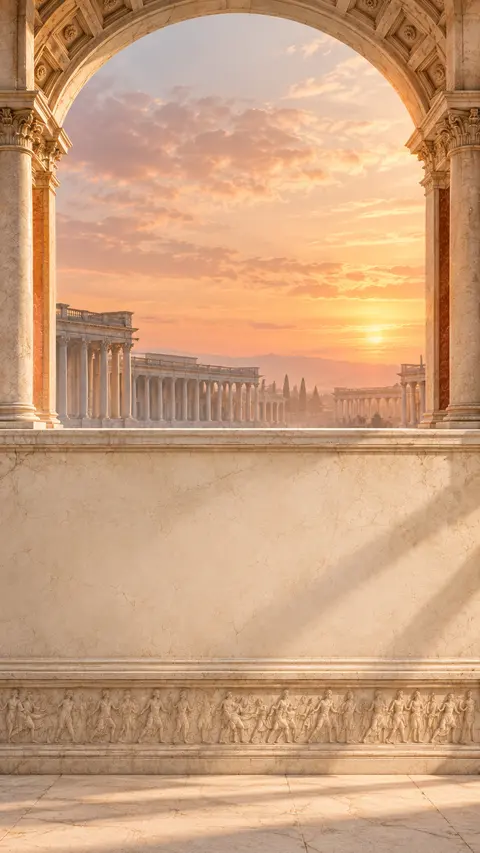
lower plaster wall; sunset should be its own visual header for long content
941 × 1672 master · 37 KB preview
Original PNGplaster-texture
use at low opacity over solid ivory; seamless tiling is not yet verified
1254 × 1254 master · 5 KB preview
Original PNGprojects-desktop
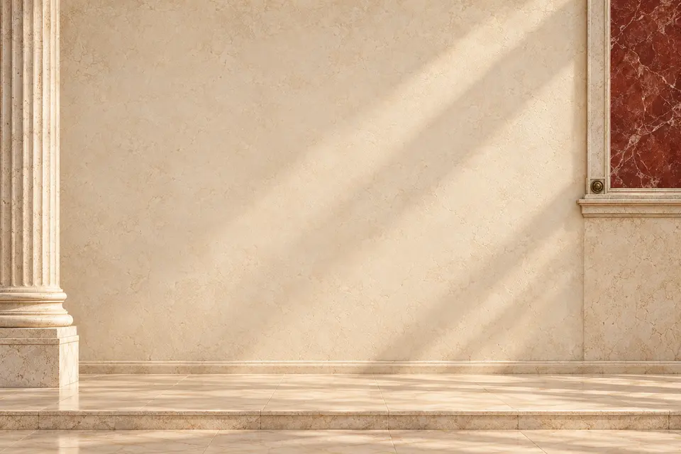
use at low opacity over solid ivory; seamless tiling is not yet verified
1536 × 1024 master · 48 KB preview
Original PNGreading-desktop
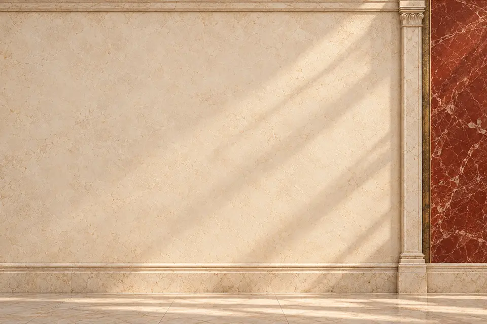
use at low opacity over solid ivory; seamless tiling is not yet verified
1536 × 1024 master · 62 KB preview
Original PNGwriting-desktop
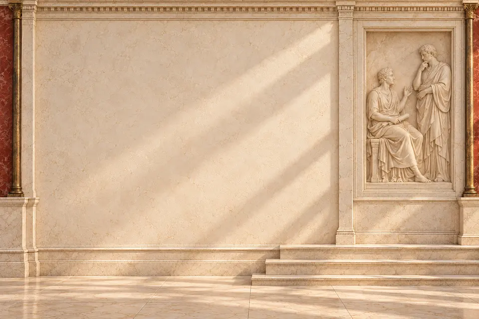
use at low opacity over solid ivory; seamless tiling is not yet verified
1536 × 1024 master · 59 KB preview
Original PNGcontact-desktop
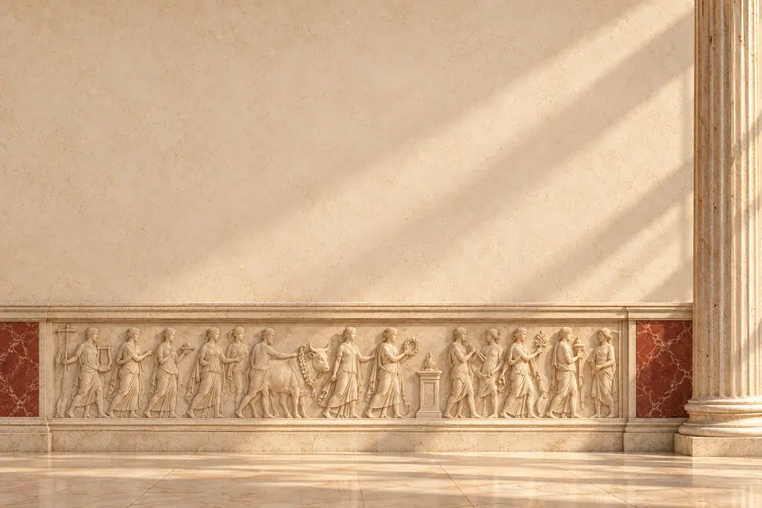
use at low opacity over solid ivory; seamless tiling is not yet verified
1536 × 1024 master · 56 KB preview
Original PNGprojects-mobile
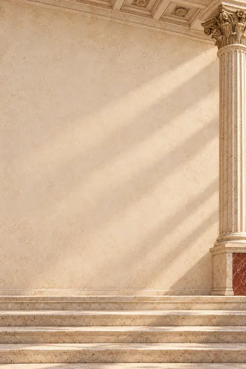
use at low opacity over solid ivory; seamless tiling is not yet verified
1024 × 1536 master · 31 KB preview
Original PNGreading-mobile
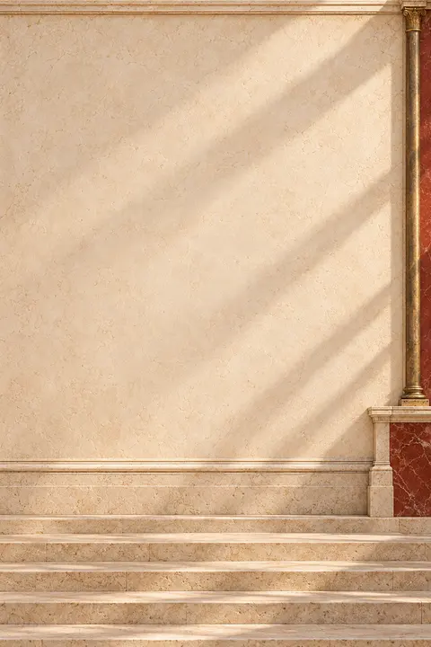
use at low opacity over solid ivory; seamless tiling is not yet verified
1024 × 1536 master · 31 KB preview
Original PNGwriting-mobile
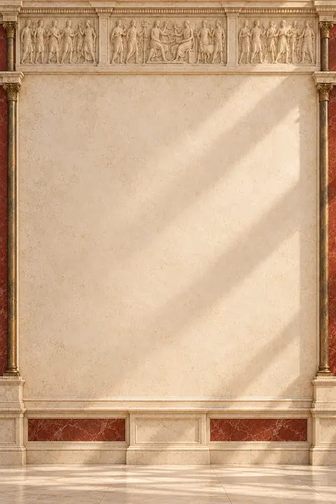
use at low opacity over solid ivory; seamless tiling is not yet verified
1024 × 1536 master · 35 KB preview
Original PNGcontact-mobile
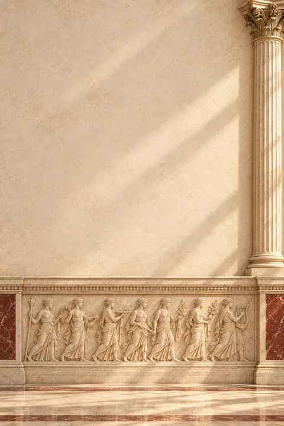
use at low opacity over solid ivory; seamless tiling is not yet verified
1024 × 1536 master · 37 KB preview
Original PNG